The learning objectives for this practical are:
To do this practical you need an installation of the text editor VS
Code, R and RStudio. You can find the instructions in the setup link on how to install, VS Code, R and RStudio
in your system. Make a directory called practical11 for
this practical.
To add the GitHub Copilot extension to VS Code, follow these steps:
Open VS Code.
Click on the Extensions icon in the left sidebar (or press
Ctrl+Shift+X).
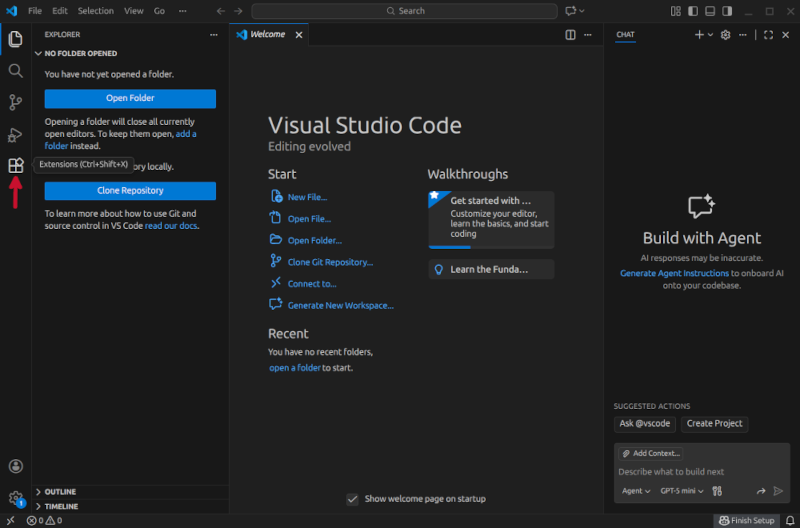
In the search bar, type “GitHub Copilot” and press Enter, and
once you see the GitHub Copilot extension in the search results, click
on the Install button.
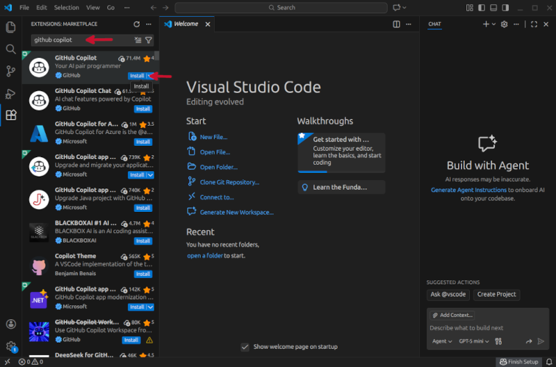
This will install in fact two extensions, GitHub Copilot and GitHub Copilot chat. The first one allows you to get in-line code suggestions as you type, while the second one is a conversational AI assistant that allows you to have a chat with GitHub Copilot to help you with your coding-specific tasks.
Once the GitHub Copilot extension is installed, you need to authenticate your GitHub account in VS Code. This will only work if your GitHub account has access to GitHub Copilot. If you don’t have access to GitHub Copilot, you can request access as a student by following the instructions in this link.
To authorise VS Code to access your GitHub account, follow these steps:
Sign in to use AI Features.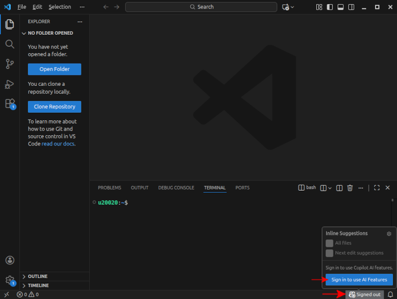
Continue with GitHub.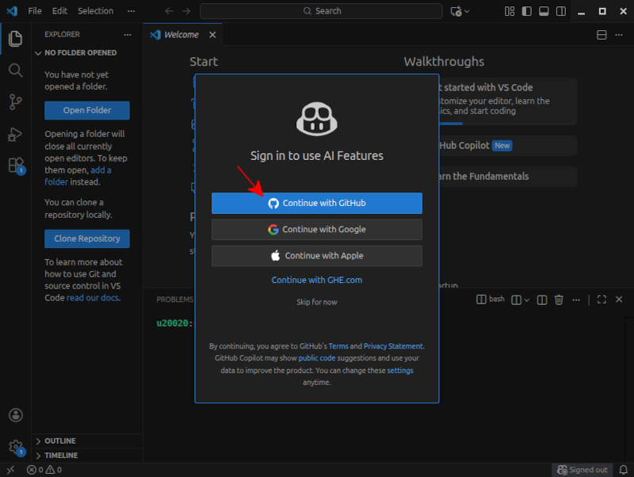
Continue.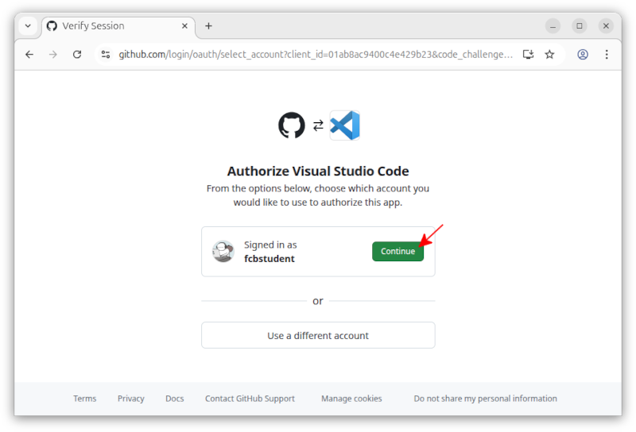
Authorise Visual Studio Code.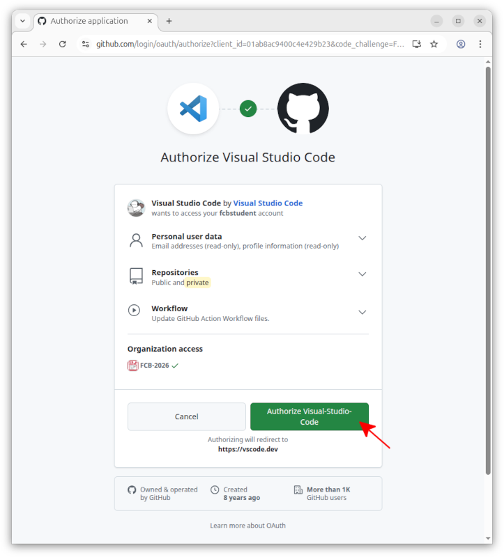
VS Code is now authorised to access your GitHub account.
You can now close the web page and go back to VS Code, where you may be
asked whether you trust the authors of the files in this workspace.
Click on Trust Workspace & Continue.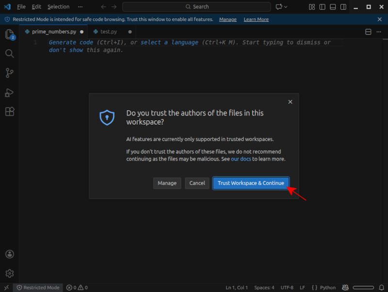
If you GitHub acccount is properly linked to VS Code, you should see a tiny Copilot icon in the bottom right corner of the VS Code window. If this icon is not visible or is crossed out, it means that GitHub Copilot is not properly linked to your GitHub account. In such a case, go back to the previous section and make sure you have properly linked your GitHub account to VS Code.
Sometimes, the extensions may be installed and your GitHub account
properly linked, but VS Code may ask you to either trust the current
workspace/file that you have opened, or to click a the popup window
saying Enable AI features.
To start using GitHub Copilot, open a new file in VS Code called
odd_even_numbers.py, in the
practical11 directory, and type the following two
comment lines:
## write a program in Python that asks the user for an integer
## number and then prints out whether the number is odd or even.As you type the second comment line, you should see a suggestion from GitHub Copilot appearing in light grey text, like in the image below. While the primary supported language for prompts and chatting with GitHub Copilot is English, you can also use other languages, such as Catalan or Spanish, so feel free to write the comments in any language you prefer.
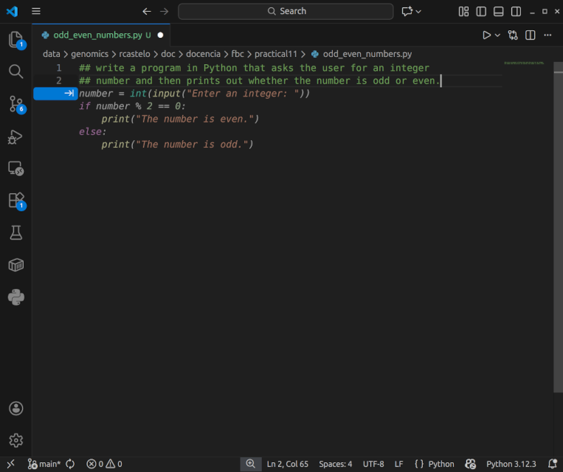
This suggestion is the code that GitHub Copilot thinks is the most
likely to be what you want to write based on the comments you have
written and the context of the file. To accept the suggestion, press the
Tab key, and now save the file and run it in the shell to
see that it works as expected.
Exercise: Open in VS Code a new file called
perfect_numbers.py in the practical10
directory and, using GitHub Copilot, write a Python program that asks
the user for an integer number and then prints out whether the number is
a perfect number or not. A perfect number is a positive integer that is
equal to the sum of its proper divisors, i.e., excluding itself from the
sum. For example, 6 is a perfect number because its positive divisors
are 1, 2, and 3, and their sum is 6. Once the program is ready, save the
file and run it in the shell to see that it works as expected.
Open the Copilot Chat extension (clicking on the right of the search
text box) and ask GitHub Copilot to modify the
perfect_numbers.py program to take the input number from
the command line instead of asking the user for it, by typing the
following prompt in the chat window:
modify this program to take the input number from the command line instead of
asking the user for it.After some thinking, GitHub Copilot will suggest a modified version
of the program, and you can accept the suggestion by clicking on the
Allow button shown in the image below.
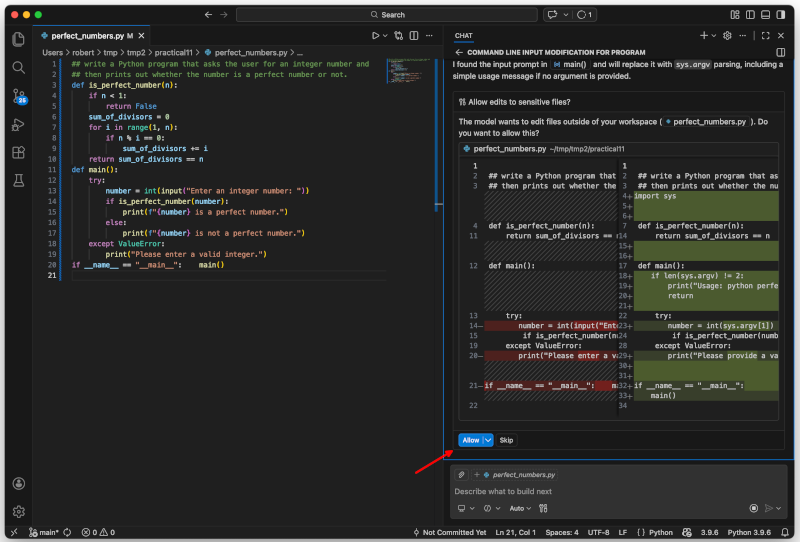
GitHub Copilot will modify the program as you have asked, and will
give you the option to keep the modified code or undo the suggested
edits. Click on the button Keep shown in the image
below.
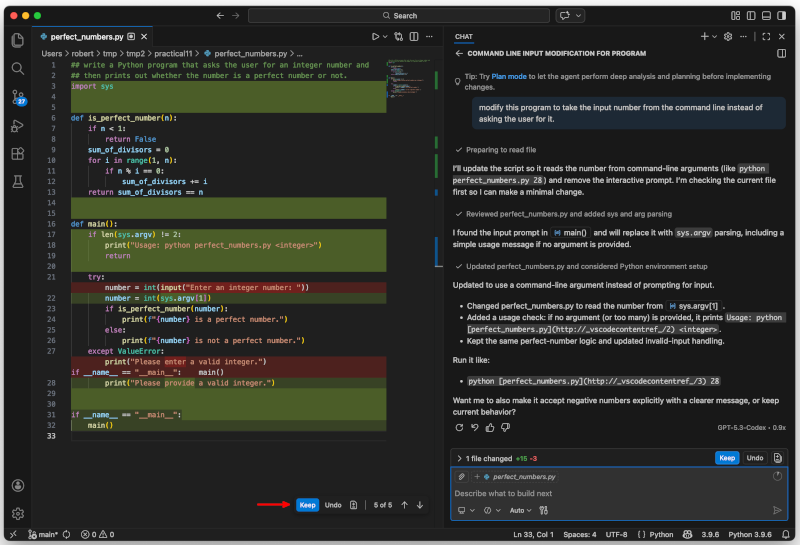
Now save the file, go to the Unix command line and verify that the modified program works as expected by calling it as follows:
$ python perfect_numbers.py 6GitHub Copilot can also provide explanations for the code it suggests. For instance, in the previous example, type in the Copilot Chat window the following prompt, selecting the first option that appears in the dropdown menu as shown in the image below.:
/explain the function is_perfect_number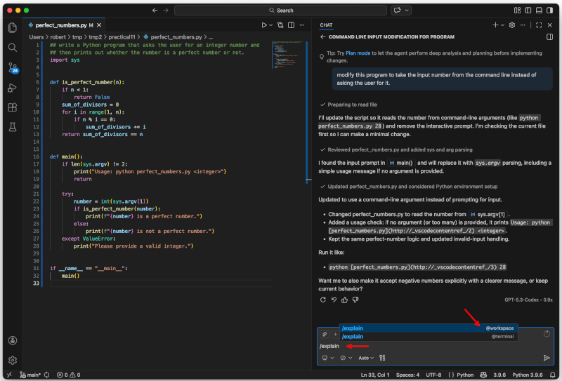